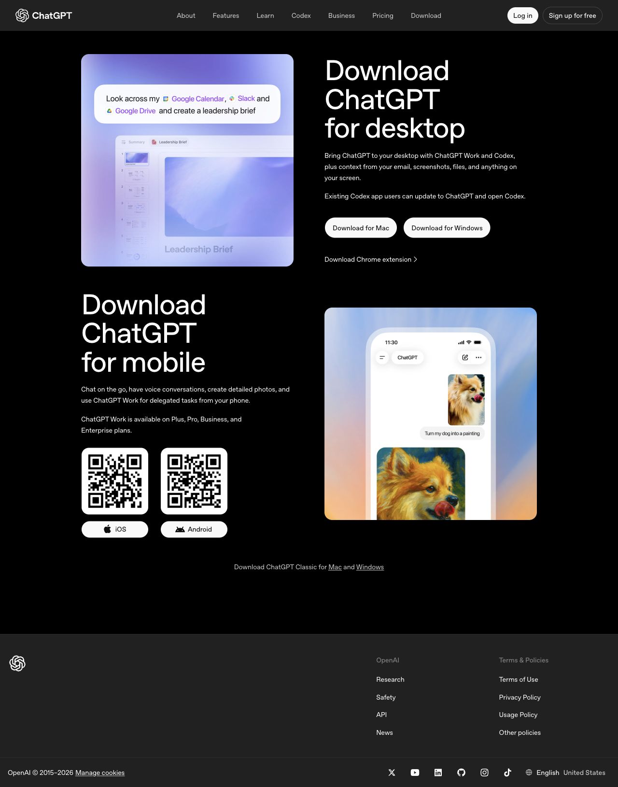
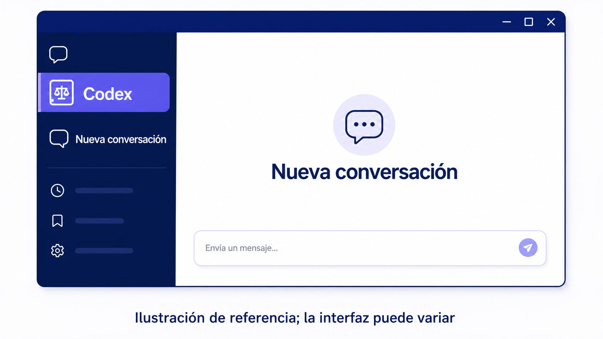
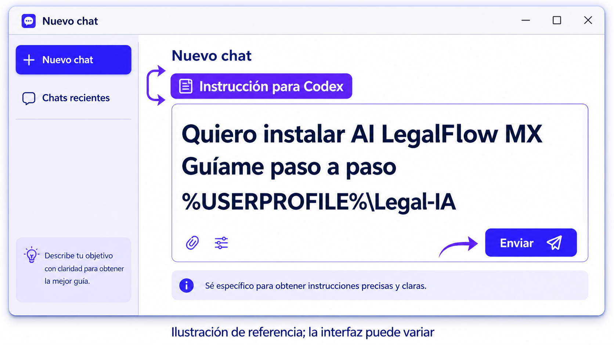
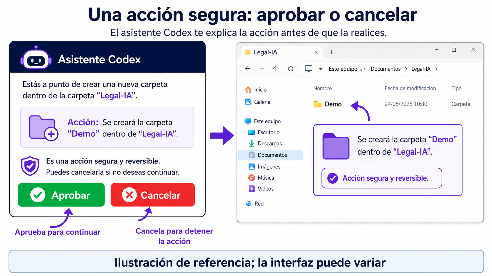
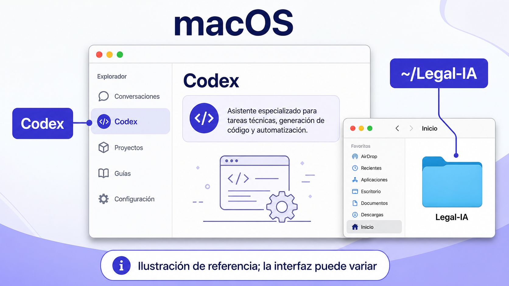

AI LEGALFLOW MX
Empieza en tres pasos en Windows
Prepara tu espacio jurídico sin aprender Terminal, Git ni programación.
1. Descarga ChatGPT
Descargar ChatGPT para Windows. Instálalo y abre una conversación nueva. La página de descarga puede cambiar: sigue siempre el enlace oficial.

Captura real de chatgpt.com/download, 15 de agosto de 2026. Sigue el enlace oficial: la página puede cambiar.
2. Abre Codex

Ilustración de referencia; la interfaz puede variar.
3. Pega esta instrucción

Quiero instalar AI LegalFlow MX en esta computadora Windows. Guíame paso a paso. Revisa primero mi equipo. Después instala AI LegalFlow MX con el método oficial, crea mi carpeta de asuntos en %USERPROFILE%\Legal-IA y ayúdame a ejecutar una demostración o crear mi primer asunto. No me pidas ni guardes contraseñas, tokens, códigos de verificación ni información de clientes. Antes de descargar, instalar, crear carpetas o configurar nube, explícame qué harás y pide mi aprobación.
Aprueba cada cambio y empieza a trabajar

Codex te explica cada acción. Aprueba sólo lo que entiendas. Tu primer asunto empieza en tu computadora: GitHub es opcional y se configura después.
macOS: sigue estos pasos

La secuencia es la misma. La carpeta sugerida es ~/Legal-IA.
Si algo falta, deja que Codex te guíe
El diagnóstico explica qué falta y cómo continuar. Si prefieres instalar desde PowerShell, consulta la alternativa de Windows. Nunca compartas secretos o expedientes de clientes para instalar.